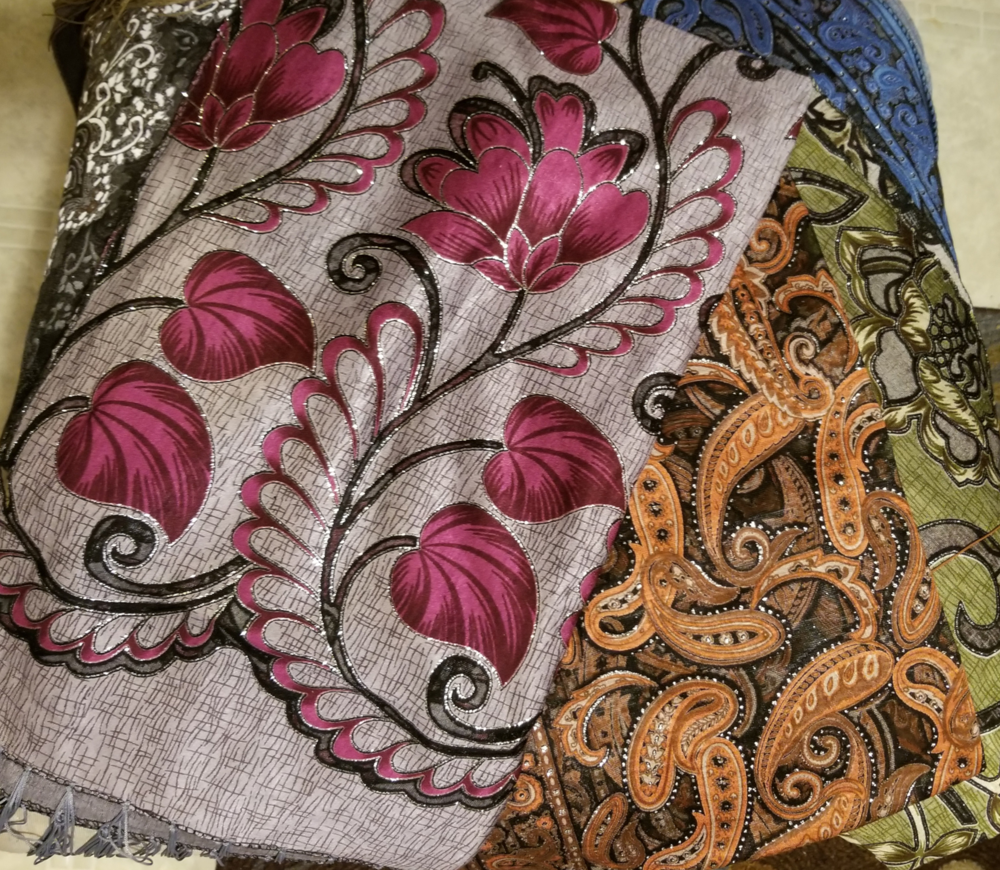
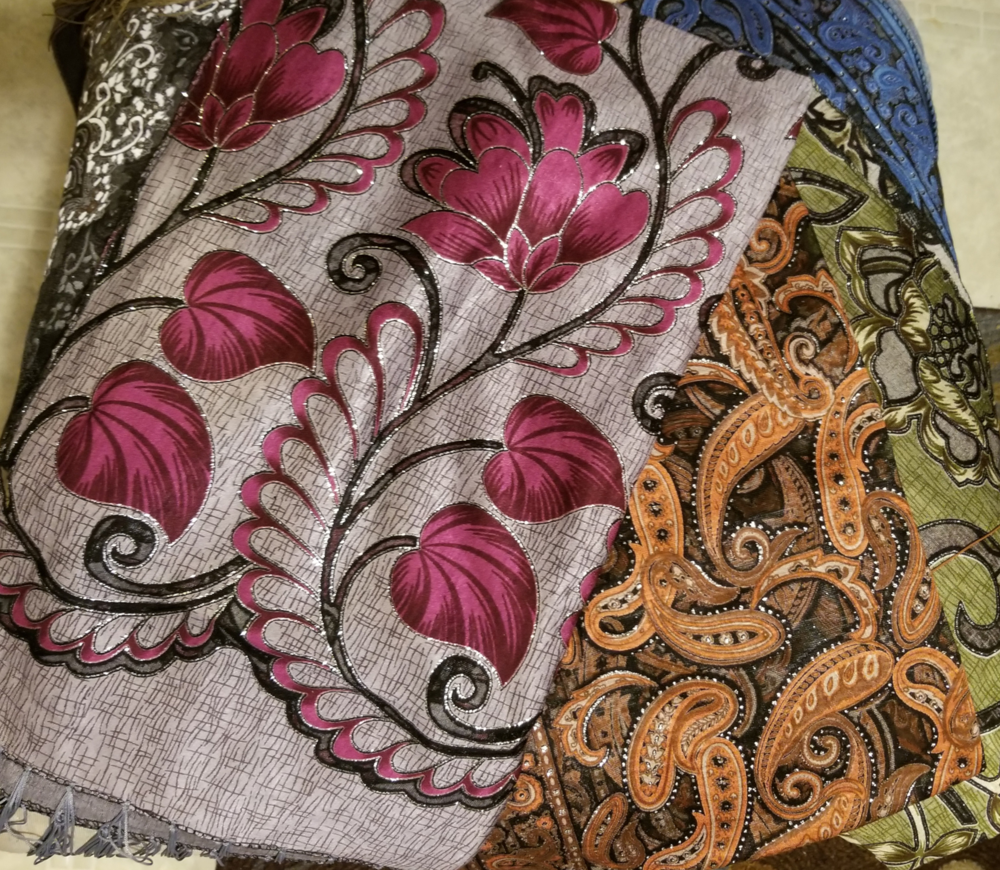

Scarves imported from Thailand. For when you need some flair for your wardrobe.
If you love scarves as we do, you know how much of an impact they can make on your wardrobe.
One scarf can take an ordinary outfit and add a punch of color, or just enough elegance to make
your day shine.
Ruby Creek Boutique sources handmade scarves from all over the world to find the best quality goods.
Our source works with three Fair Trade companies in Cambodia, Laos, Nepal, Peru, and elsewhere
to ensure quality while trying to support different communities around the world. We select pieces
from markets, small owned shops, factories and silk/cotton farms. We’ve witnessed these companies
or shops hand loom some of the scarves and see how silk and cotton is woven.
When you buy our products, you are supporting families from other countries all across the
world—
and you have the peace of mind of knowing that these are quality made. We know that once
you hold one of these scarves in your hands, you will marvel at the beauty of these handmade products,
and will want to add one of each color to your wardrobe.
 
